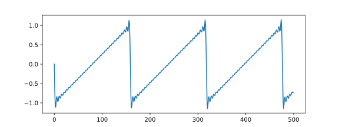
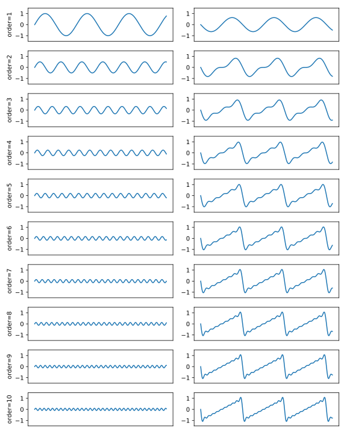
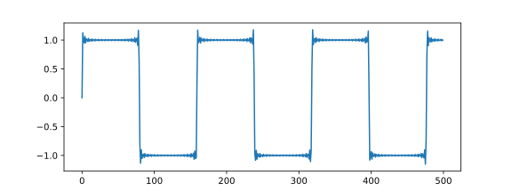
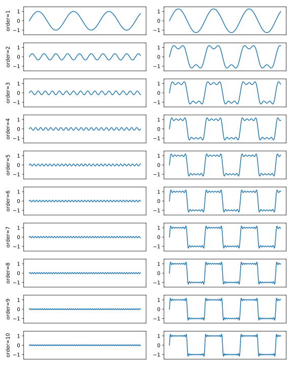
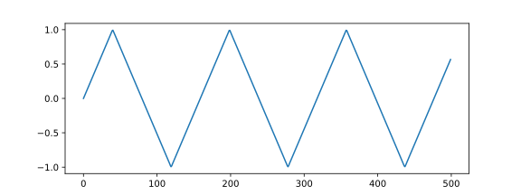
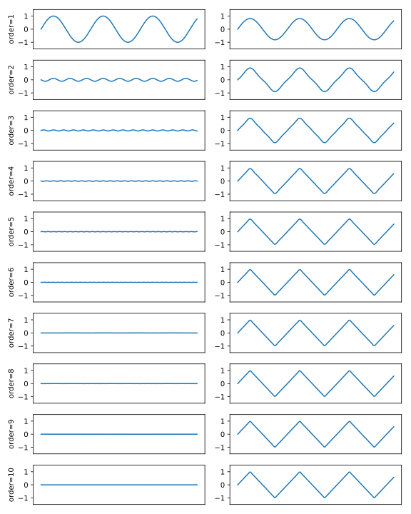

Additive synthesis is the process of approximating waveforms by adding sine waves together. In this article, I provide some examples of how specific waveforms can be composed using this method.
A sawtooth waveform can be represented by the following equation:
\[ x_\mathrm{sawtooth}(t) = -\frac {A}{\pi}\sum_{k=1}^{\infty}\frac {\sin (2\pi kft)}{k} \]
Where \(A\) is the amplitude, \(f\) is the frequency of the desired waveform, \(k\) is the order, or number of harmonics to use for the approximation, and \(t\) is time.
Using NumPy we can perform a relatively straightforward translation of the above equation into the following Python code:
>>> from numpy import pi, sin, linspace
>>> order = 30
>>> t = linspace(0, pi, 500)
>>> waveform = -(2/pi) * sum([
... sin(2 * pi * k * t)/k
... for k in range(1, (order+2))
... ])
>>>The above code results in:

The following figure shows the result of each successive step as \(k\) iterates from 1 to 10.

\[ x_{\mathrm{square}}(t) = \frac{4}{\pi} \sum_{k=1}^\infty {\sin{\left (2\pi (2k-1) ft \right )}\over(2k-1)} \]
>>> from numpy import pi, sin, linspace
>>> order = 30
>>> t = linspace(0, pi, 500)
>>> waveform = (4/pi) * sum([
... sin(2 * pi * (2 * k - 1) * t)/(2 * k - 1)
... for k in range(1, (order+2))
... ])
>>>

\[ x_\mathrm{triangle}(t) = \frac {8}{\pi^2} \sum_{k=0}^\infty (-1)^k \, \frac{ \sin \left( 2\pi(2k+1) ft \right)}{(2k+1)^2} \]
>>> from numpy import pi, sin, linspace
>>> order = 30
>>> t = linspace(0, pi, 500)
>>> waveform = (8/pi**2) * sum([
... (-1)**k *
... sin(2 * pi * (2 * k + 1) * t)/(2 * k + 1)**2
... for k in range(0, (order+1))
... ])
>>>
